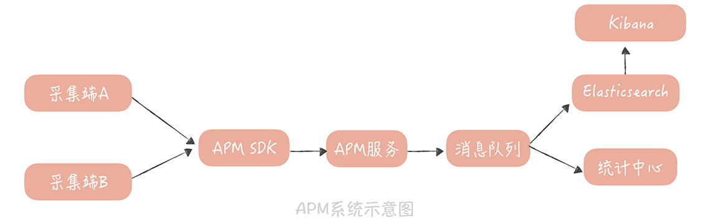
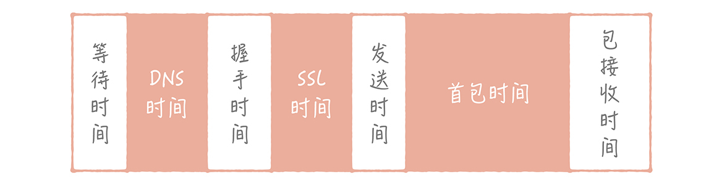

- 00 开篇词 为什么你要学习高并发系统设计？.md.html
- 01 高并发系统：它的通用设计方法是什么？.md.html
- 02 架构分层：我们为什么一定要这么做？.md.html
- 03 系统设计目标（一）：如何提升系统性能？.md.html
- 04 系统设计目标（二）：系统怎样做到高可用？.md.html
- 05 系统设计目标（三）：如何让系统易于扩展？.md.html
- 06 面试现场第一期：当问到组件实现原理时，面试官是在刁难你吗？.md.html
- 07 池化技术：如何减少频繁创建数据库连接的性能损耗？.md.html
- 08 数据库优化方案（一）：查询请求增加时，如何做主从分离？.md.html
- 09 数据库优化方案（二）：写入数据量增加时，如何实现分库分表？.md.html
- 10 发号器：如何保证分库分表后ID的全局唯一性？.md.html
- 11 NoSQL：在高并发场景下，数据库和NoSQL如何做到互补？.md.html
- 12 缓存：数据库成为瓶颈后，动态数据的查询要如何加速？.md.html
- 13 缓存的使用姿势（一）：如何选择缓存的读写策略？.md.html
- 14 缓存的使用姿势（二）：缓存如何做到高可用？.md.html
- 15 缓存的使用姿势（三）：缓存穿透了怎么办？.md.html
- 16 CDN：静态资源如何加速？.md.html
- 17 消息队列：秒杀时如何处理每秒上万次的下单请求？.md.html
- 18 消息投递：如何保证消息仅仅被消费一次？.md.html
- 19 消息队列：如何降低消息队列系统中消息的延迟？.md.html
- 20 面试现场第二期：当问到项目经历时，面试官究竟想要了解什么？.md.html
- 21 系统架构：每秒1万次请求的系统要做服务化拆分吗？.md.html
- 22 微服务架构：微服务化后，系统架构要如何改造？.md.html
- 23 RPC框架：10万QPS下如何实现毫秒级的服务调用？.md.html
- 24 注册中心：分布式系统如何寻址？.md.html
- 25 分布式Trace：横跨几十个分布式组件的慢请求要如何排查？.md.html
- 26 负载均衡：怎样提升系统的横向扩展能力？.md.html
- 27 API网关：系统的门面要如何做呢？.md.html
- 28 多机房部署：跨地域的分布式系统如何做？.md.html
- 29 Service Mesh：如何屏蔽服务化系统的服务治理细节？.md.html
- 30 给系统加上眼睛：服务端监控要怎么做？.md.html
- 31 应用性能管理：用户的使用体验应该如何监控？.md.html
- 32 压力测试：怎样设计全链路压力测试平台？.md.html
- 33 配置管理：成千上万的配置项要如何管理？.md.html
- 34 降级熔断：如何屏蔽非核心系统故障的影响？.md.html
- 35 流量控制：高并发系统中我们如何操纵流量？.md.html
- 36 面试现场第三期：你要如何准备一场技术面试呢？.md.html
- 37 计数系统设计（一）：面对海量数据的计数器要如何做？.md.html
- 38 计数系统设计（二）：50万QPS下如何设计未读数系统？.md.html
- 39 信息流设计（一）：通用信息流系统的推模式要如何做？.md.html
- 40 信息流设计（二）：通用信息流系统的拉模式要如何做？.md.html
- 加餐 数据的迁移应该如何做？.md.html
- 期中测试 10道高并发系统设计题目自测.md.html
- 用户故事 从“心”出发，我还有无数个可能.md.html
- 结束语 学不可以已.md.html
- 捐赠
31 应用性能管理：用户的使用体验应该如何监控？
你好，我是唐扬。
上一节课中，我带你了解了服务端监控搭建的过程。有了监控报表之后，你的团队在维护垂直电商系统时，就可以更早地发现问题，也有直观的工具辅助你们分析排查问题了。
不过，你很快发现，有一些问题，服务端的监控报表无法排查，甚至无法感知。比如，有用户反馈创建订单失败，但是从服务端的报表来看，并没有什么明显的性能波动，从存储在 Elasticsearch 里的原始日志中，甚至没有找到这次创建订单的请求。这有可能是客户端有 Bug，或者网络抖动导致创建订单的请求并没有发送到服务端。
再比如，有些用户会反馈，使用长城宽带打开商品详情页面特别慢，甚至出现 DNS 解析失败的情况。那么，当我们遇到这类问题时，要如何排查和优化呢？
这里面涉及一个概念叫应用性能管理（Application Performance Management，简称 APM），它的含义是：对应用各个层面做全方位的监测，期望及时发现可能存在的问题，并加以解决，从而提升系统的性能和可用性。
你是不是觉得和之前讲到的服务端监控很相似？其实，服务端监控的核心关注点是后端服务的性能和可用性，而应用性能管理的核心关注点是终端用户的使用体验，也就是你需要衡量，从客户端请求发出开始，到响应数据返回到客户端为止，这个端到端的整体链路上的性能情况。
如果你能做到这一点，那么无论是订单创建问题的排查，还是长城宽带用户页面打开缓慢的问题，都可以通过这套监控来发现和排查。那么，如何搭建这么一套端到端的监控体系呢？
如何搭建 APM 系统
与搭建服务端监控系统类似，在搭建端到端的，应用性能管理系统时，我们也可以从数据的采集、存储和展示几个方面来思考。
首先，在数据采集方面，我们可以采用类似 Agent 的方式，在客户端上植入 SDK，由 SDK 负责采集信息，并且经过采样之后，通过一个固定的接口，定期发送给服务端。这个固定接口和服务端，我们可以称为 APM 通道服务。
虽然客户端需要监控的指标很多，比如监控网络情况，监控客户端卡顿情况、垃圾收集数据等等，但我们可以定义一种通用的数据采集格式。
比如，在我之前的公司里，采集的数据包含下面几个部分，SDK 将这几部分数据转换成 JSON 格式后，就可以发送给 APM 通道服务了。这几部分数据格式，你可以在搭建自己的 APM 系统时，直接拿来参考。
系统部分：包括数据协议的版本号，以及下面提到的消息头、端消息体、业务消息体的长度；
消息头：主要包括应用的标识（appkey），消息生成的时间戳，消息的签名以及消息体加密的秘钥；
端消息体：主要存储客户端的一些相关信息，主要有客户端版本号、SDK 版本号、IDFA、IDFV、IMEI、机器型号、渠道号、运营商、网络类型、操作系统类型、国家、地区、经纬度等等。由于这些信息有些比较敏感，所以我们一般会对信息加密；
业务消息体：也就是真正要采集的数据，这些数据也需要加密。
加密的方法是这样的：我们首先会分配给这个应用，一对 RSA 公钥和私钥，然后 SDK 在启动的时候，先请求一个策略服务，获取 RSA 公钥。在加密时，客户端会随机生成一个对称加密的秘钥 Key，端消息体和业务消息体，都会使用这个秘钥来加密。那么数据发到 APM 通道服务后，要如何解密呢？
客户端会使用 RSA 的公钥对秘钥加密，存储在消息头里面（也就是上面提到的，消息体加密秘钥），然后 APM 通道服务使用 RSA 秘钥，解密得到秘钥，就可以解密得到端消息体和业务消息体的内容了。
最后，我们把消息头、端消息体、业务消息体还有消息头中的时间戳组装起来，用 MD5 生成摘要后，存储在消息头中（也就是消息的签名）。这样，APM 通道服务在接收到消息后，可以使用同样的算法生成摘要，并且与发送过来的摘要比对，以防止消息被篡改。
数据被采集到 APM 通道服务之后，我们先对 JSON 消息做解析，得到具体的数据，然后发送到消息队列里面。从消息队列里面消费到数据之后，会写一份数据到 Elasticsearch 中，作为原始数据保存起来，再写一份到统计平台，以形成客户端的报表。

有了这套 APM 通道服务，我们就可以将从客户端上采集到的信息，通过统一的方式上报到服务端做集中处理。这样一来，你就可以收集到客户端上的性能数据和业务数据，能够及时地发现问题了。
那么问题来了：虽然你搭建了客户端监控系统，但是在我们电商系统客户端中可以收集到用户网络数据，卡顿数据等等，你是要把这些信息都监控到位，还是有所侧重呢？要知道，监控的信息不明确，会给问题排查带来不便，而这就是我们接下来探究的问题，也就是你到底需要监控用户的哪些信息。
需要监控用户的哪些信息
在我看来，搭建端到端的监控体系的首要目标，是解决如何监控客户端网络的问题，这是因为我们遇到的客户端问题，大部分的原因还是出在客户端网络上。
在中国复杂的网络环境下，大的运营商各行其是，各自为政，在不同的地区的链路质量各有不同，而小的运营商又鱼龙混杂，服务质量得不到保障。我给你说一个典型的问题。
之前在讲解 DNS 时，我曾经提到在做 DNS 解析的时候，为了缩短查询的链路，首先会查询运营商的 Local DNS，但是 Local DNS 这个东西很不靠谱，有些小的运营商为了节省流量，他会把一些域名解析到内容缓存服务器上，甚至会解析到广告或者钓鱼网站上去，这就是域名劫持。也有一些运营商它比较懒，自己不去解析域名，而是把解析请求，转发到别的运营商上，这就导致权威 DNS 收到请求的来源 IP 的运营商，是不正确的。这样一来，解析的 IP 和请求源，会来自不同的运营商，形成跨网的流量，导致 DNS 解析时间过长。这些需要我们进行实时地监控，以尽快地发现问题，反馈给运营商来解决。
那么，我们如何采集网络数据呢？一般来说，我们会用埋点的方式，将网络请求的每一个步骤耗时情况、是否发生错误，都打印下来，我以安卓系统为例，解释一下是如何做的。
安卓一般会使用 OkHttpClient 来请求接口数据，而 OkHttpClient 提供了 EventListner 接口，可以让调用者接收到网络请求事件，比如，开始解析 DNS 事件，解析 DNS 结束的事件等等。那么你就可以埋点计算出，一次网络请求的各个阶段的耗时情况。我写了一段具体的示例代码，计算了一次请求的 DNS 解析时间，你可以拿去参考。
public class HttpEventListener extends EventListener {
final static AtomicLong nextCallId = new AtomicLong(1L);
private final long callId;
private long dnsStartTime;
private HttpUrl url ;
public HttpEventListener(HttpUrl url) {
this.callId = nextCallId.getAndIncrement(); // 初始化唯一标识这次请求的 ID
this.url = url;
}
@Override
public void dnsStart(Call call, String domainName) {
super.dnsStart(call, domainName);
this.dnsStartTime = System.nanoTime(); // 记录 dns 开始时间
}
@Override
public void dnsEnd(Call call, String domainName, List<InetAddress> inetAddressList) {
super.dnsEnd(call, domainName, inetAddressList);
System.out.println("url： " + url.host() + ", Dns time: " + (System.nanoTime() - dnsStartTime)); // 计算 dns 解析的时间
}
}
有了这个 EventListner，你就可以在初始化 HttpClient 的时候把它注入进去，代码如下：
OkHttpClient.Builder builder = new OkHttpClient.Builder()
.eventListenerFactory(new Factory() {
@Override
public EventListener create(Call call) {
return new HttpEventListener(call.request().url());
}
});
这样，我们可以得出一次请求过程中，经历的一系列过程的时间，其中主要包括下面几项。
等待时间：异步调用时，请求会首先缓存在本地的队列里面，由专门的 I/O 线程负责，那么在 I/O 线程真正处理请求之前，会有一个等待的时间。
DNS 时间：域名解析时间。
握手时间：TCP 三次握手的时间。
SSL 时间：如果服务是 HTTPS 服务，那么就会有一个 SSL 认证的时间。
发送时间：请求包被发送出去的时间。
首包时间：服务端处理后，客户端收到第一个响应包的时间。
包接收时间：我们接收到所有数据的时间。

有了这些数据之后，我们可以通过上面提到的 APM 通道服务，发送给服务端，这样服务端和客户端的同学，就可以从 Elasticsearch 中，查询到原始的数据，也可以对数据做一些聚合处理、统计分析之后，形成客户端请求监控的报表。这样，我们就可以有针对性地对 HTTP 请求的某一个过程做优化了。
而对于用户网络的监控，可以给你带来三方面的价值。
首先，这种用户网络监控的所有监控数据均来自客户端，是用户访问数据实时上报，因此能够准确、真实、实时地反应用户操作体验。
再者，它是我们性能优化的指向标，当做业务架构改造、服务性能优化、网络优化等任何优化行为时，可以反馈用户性能数据，引导业务正向优化接口性能、可用性等指标。
最后，它也能帮助我们监控 CDN 链路质量。之前的 CDN 的监控，严重依赖 CDN 厂商，这有一个问题是：CDN 无法从端上获取到全链路的监控数据，有些时候，客户端到 CDN 的链路出了问题，CDN 厂商是感知不到的，而客户端监控弥补了这方面的缺陷，并且可以通过告警机制督促 CDN 及时优化调整问题线路。
除了上报网络数据之外，我们还可以上报一些异常事件的数据，比如你的垂直电商系统可能会遇到以下一些异常情况。
登录失败
下单失败
浏览商品信息失败
评论列表加载不出来
无法评分留言
…
你在业务逻辑的代码中，都可以检测到这些异常数据，当然，也可以通过 APM 通道服务，上传到服务端，这样方便服务端和客户端的同学一起来排查问题，也能给你的版本灰度提供数据的支持。
总的来说，如果说搭建的系统是骨架，那么具体监控的数据就是灵魂，因为数据是监控的主题内容，系统只是呈现数据的载体。所以，你需要在系统运维的过程中不断完善对数据的收集，这也是对你的监控系统不断升级完善的过程。
课程小结
以上就是本节课的全部内容了。本节课，我主要带你了解了，如何搭建一个端到端的 APM 监控系统，你需要了解的重点是：
\1. 从客户端采集到的数据可以用通用的消息格式，上传到 APM 服务端，服务端将数据存入到 Elasticsearch 中，以提供原始日志的查询，也可以依据这些数据形成客户端的监控报表；
\2. 用户网络数据是我们排查客户端，和服务端交互过程的重要数据，你可以通过代码的植入，来获取到这些数据；
\3. 无论是网络数据，还是异常数据，亦或是卡顿、崩溃、流量、耗电量等数据，你都可以通过把它们封装成 APM 消息格式，上传到 APM 服务端，这些用户在客户端上留下的踪迹可以帮助你更好地优化用户的使用体验。
总而言之，监测和优化用户的使用体验是应用性能管理的最终目标。然而，服务端的开发人员往往会陷入一个误区，认为我们将服务端的监控做好，保证接口性能和可用性足够好就好了。事实上，接口的响应时间只是我们监控系统中很小的一部分，搭建一套端到端的全链路的监控体系，才是你的监控系统的最终形态。
© 2019 - 2023 Liangliang Lee. Powered by gin and hexo-theme-book.